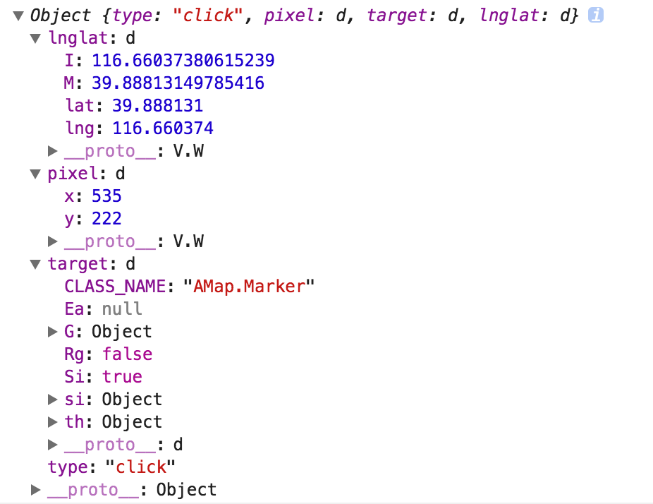
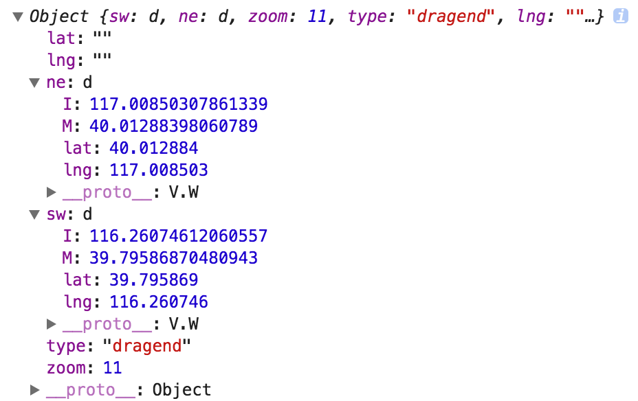
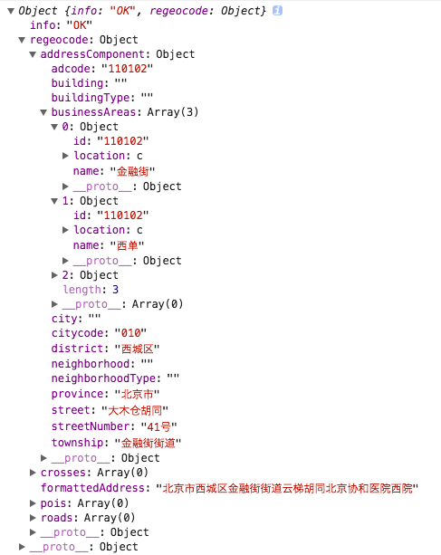

常用的高德地图api
关于appkey，分为两种，一个是api调用的key，一个是地图服务的key，例如，获取门店信息，search功能等等。
脚本加载
<script type="text/javascript" src="http://webapi.amap.com/maps?v=1.3&key=您申请的key值"></script>
需要把这个脚本加载完成后，才能使用AMap。
可以使用map-div这个组件。
如果搭配react，需要在componentDidMount阶段，调用map-div 中的createMap函数。配套的，最好将该地图实例保存在一个对象中，并设置一个flag作为地图加载完成的标志位，以便react使用。
示例：
mapInstance.js
let __value = null;
export default {
getter: () => __value,
setter: (val) => { __value = val; },
};
---------------------------------------
const mapConfig = {
name: 'AMap',
initOpts: {
zoom: MAP_CONFIG.zoom,
zooms: MAP_CONFIG.zooms,
},
query: {
plugin: 'AMap.Geocoder,AMap.CitySearch',
},
};
componentDidMount() {
(async () => {
const mapIns = await createMap(mapConfig, 'mapComponent');
mapInstance.setter(mapIns);
this.props.setMapInstanceFlag(true);
// 一些事件监听
mapEventHandler(mapIns, 'dragend', 'on', throttle(this.handleMapScale, 800));
mapEventHandler(mapIns, 'click', 'on', throttle(this.handleMapClick, 800));
...
})();
...
}
创建地图对象
需要给出一个div作为地图的容器。
<div id="container" style="width:800px; height:500px"></div>
var map = new AMap.Map('container',{ config })
注意： 如果不加center，地图默认显示用户当前城市范围
config常用基本配置
| options | 说明 |
|---|---|
| zoom | 缩放级别 |
| center | 地图中心点坐标[lon, lat] |
| zooms | 地图可以缩放的范围 ，数组格式[max, min] |
| zoomEnable | 是否可缩放，默认为true |
| dragEnable | 是否可拖拽，默认为true |
| mapStyle | 地图显示样式，normal（默认样式）、dark（深色样式）、light（浅色样式）、fresh(osm清新风格样式)、blue_night |
| features | 地图上显示的元素种类， 默认都显示，支持’bg’（地图背景）、’point’（POI点）、’road’（道路）、’building’（建筑物） |
常用的地图实例方法
地图常用方法
| 方法 | 说明 |
|---|---|
| getZoom()， setZoom() | 缩放级别 |
| getCenter(), setCenter() | 获取地图中心点坐标[lon, lat] |
| setZoomAndCenter | 同时设定缩放级别和中心点坐标 |
| setCity(city:String，callback:Functon) | 通过设置城市名称来设置地图显示的中心点 |
| zoomIn | 地图放大一级 |
| zoomOut | 地图缩小一级 |
地图常用事件类型
- click: 鼠标左键单击
- mapmove: 地图平移时触发
- movestart: 地图平移开始时触发
- moveend: 地图移动结束后触发，包括平移和缩放(经试验，缩放并没有触发moveend)。
- zoomchange: 地图缩放级别更改后触发
- zoomstart: 缩放开始时触发
- zoomend: 缩放停止时触发
- dragstart: 开始拖拽地图时触发
- dragend: 停止拖拽地图时触发
- dragging: 拖拽地图过程中触发
如果地图操作后会有其他操作，一般监听 XXXend 方法。
注意：setCity，setCenter等操作不会触发drag相关内容。
关于amap的事件绑定
有两种方法：
针对Map、覆盖物等常用类
直接使用on， off 方法来实现事件的简单绑定和移除使用AMap.event命名空间
addDomListener(domobj, eventName, handler, context(没用过，不清楚))
addListener(obj, eventName, handler, context(没用过，不清楚))
removeListener(listener): 可以移除dom和非dom事件。
事件event中的内容
- 所有的CLICK事件
点击位置的经纬度，对应在画布上的横纵坐标，事件target， 事件type
 - 其他类型事件，如moveend，zoom
event中只有事件类型type
针对以上，我们可以对地图事件进行封装，一般需要的是事件发生的zoom，地图范围，点击位置的经纬度。
🌰如下:
const eventInjector = (ev, mapINS, cb) => {
const bounds = mapINS.getBounds();
const param = {
sw: bounds.getSouthWest(),
ne: bounds.getNorthEast(),
zoom: mapINS.getZoom(),
type: ev.type,
lng: ev.lnglat ? ev.lnglat.getLng() : '',
lat: ev.lnglat ? ev.lnglat.getLat() : '',
};
if (cb) cb(param);
};
const mapEventHandler = (mapINS, type, opt, cb) => mapINS[opt](type, (ev) => eventInjector(ev, mapINS, cb));
//使用
mapEventHandler(mapIns, 'dragend', 'on', this.handleMapScale);
mapEventHandler(mapIns, 'dragend', 'off',this.handleMapScale);
//handleMapScale
handleMapScale(ev) {
console.log(ev);
const { ne, sw, zoom, type } = ev;
...
}
之后，如果在地图上发生dragend，event的结果如下：

常用地图基本类型
LngLat ： 经纬度坐标，确定地图上的一个点
构造函数： AMap.LngLat(lng: 119.78, lat: 39.99);
生成一个经纬度为[119.78, 39.99]的地理坐标对象。
常用方法：
- getLng() 获取经度
- getLat() 获取纬度
- offset(w:2,s:-3) w经度，s纬度，参数为数字。将当前经纬度坐标值变化。经度是越向右越大，所以向右为正。同理，纬度越向上越大，所以向上为正。
- distance(lnglat: LngLat | [lng, lat]) 当前经纬度与传入的经纬度的连线的地面距离
- equals(lnglat:LngLat)
Bounds：经纬度范围矩形框
AMap.Bounds(southWest:LngLat1, northEast:LngLat2);
生成一个东北角是LngLat2，西南角是LngLat1 的矩形地物框。
常用方法：
- contains(point: LngLat) 给出的经纬度点是否包含在矩形范围内
- getCenter()
- getSouthWest()
- getNorthEast()
常用覆盖物
AMap.Marker
- 构造：AMap.Marker({ markeroptions })
- 常用选项
map:marker所在的地图
position: LngLat类型，点在地图上的位置
offset: 像素类型(-75，-75)，marker距离左上角的偏移
content: string/object 这里可以自定义marker显示的内容，图片，svg等都可以。
bubble: 将覆盖物的事件冒泡到地图上，默认false
zIndex: 叠加顺序
title: 鼠标滑过时，点标记的文字提示。
extData: 用户自定义属性
draggable: 标记点是否可以拖拽移动 - 方法略多，这里就不写了，基本对应每个选项都会有个get，set方法。hide，show控制点标记的隐藏，还在map中。setMap比较有用，如果设为null，则在地图上移除当前Marker相关的div。还有一些移动类的应用，目前还没使用过，这里就不详述了，主要有：
moveAlong,moveTo,stopMove,pauseMove,resumeMove。 - 事件与地图对象基本一致，少了个ready。多了一些move的行为，具体可参考
AMap.Polygon
- 构造：AMap.Polygon({ options })
常用选项
map:marker所在的地图
path: 参数为，包含经纬度数组的数组.eg：[ [116.368904, 39.913423], [116.382122, 39.901176], [116.387271, 39.912501], [116.398258, 39.904600] ]
bubble: 将覆盖物的事件冒泡到地图上，默认false。
zIndex: 叠加顺序, 默认比marker低。
类似svg的多边形属性: strokeColor，strokeOpacity， strokeWeight， fillColor， fillOpacity， strokeStyle， strokeDasharray。
extData: 自定义属性
- 方法。对应path，extData， options都会有个get，set方法。hide，show控制多边形的隐藏，多边形还在map中。setMap比较有用，如果设为null，则在地图上移除当前polygon相关的div。getBounds,矩形范围对象，返回Bounds类型。getArea,获取多边形面积。contains(point:LngLat)，点是否在polygon内。
- 事件很多，常用的又mouseover， click等。具体可参考
AMap.Circle
- 构造：AMap.Circle({ options })
常用选项
map:marker所在的地图
center: LngLat类型，圆心在地图上的位置
radius: 半径，number类型，单位是米
bubble: 将覆盖物的事件冒泡到地图上，默认false
zIndex: 叠加顺序, 默认比marker低。
extData: 用户自定义属性
类似svg的多边形属性： 同上polygon方法。对应center，extData， radius，options都会有个get，set方法。hide，show控制隐藏，还在map中。setMap同上。getBounds，圆外切矩形范围对象，返回Bounds类型。contains(point:LngLat)，点是否在圆内。
- 事件类型类似polygon 具体可参考
AMap.Polyline
- 构造：AMap.Marker({ markeroptions })
- 常用选项，与polygon差不多。多一些线条相关的内容，具体可参考
- 方法和事件与polygon差不多
常用图层
图层是位于最底层的模块，他可能在地图上的其他物件还没加载完就已经生成了。图层都需要地图以plugin的形式引进。
AMap.Heatmap
heatmap是个plugin，需要添加plugin，在回调函数中生成AMap.Heatmap实例。
const heatmap;
map.plugin(["AMap.Heatmap"], function() {
heatmap = new AMap.Heatmap(map, {
radius: 25, //给定半径
opacity: [0, 0.8]
});
});
上面的config，包含radius``gradient``opacity``zooms(支持的缩放级别，不在范围内，就不显示热力图了)
渐变可以按照如下设置
gradient: { 0.4: 'red', 0.8: 'yellow', 1: 'blue'}
方法
与覆盖物的差不多，除了，
addDataPoint(lng: Lng, lat: Lat, count: number)
setDataSet(data: obj, url:jsonp格式数据的服务地址，urlDataParser:可以传递函数进行数据转化)
// 这两个可以配合zoom，不同的zoom，热力图对应的数据集不同。
其中，data格式为：
{ max: number,
data: [
{ lng: 116.7, lat: 39.9, count: 10 },
{ lng: 116.7, lat: 39.9, count: 10 }],
}
AMap.CustomLayer
同样需要plugin来引入。
给出的属性和方法很少，但是功能强大，需要自己开发，参考实例
一般是自己做一些canvas，然后挂载在map上即可。
自定义图层有个render属性？使其等于绘制函数，就可以在地图上绘制出来。
搜索服务
支持搜索服务脱离地图使用，即使用搜索服务不再需要先实例化地图。通过AMap.plugin方法，加载需要的服务
AMap.Autocomplete
常用选项：
city:输入提示被限定的城市
citylimit: 是否强制限制在设置的城市内搜索
input:指定一个输入框，内容则作为input的id，在input输入文字后，会自动生成一个下拉选择列表。search方法，可以结合他的search方法，获取数据，然后自己render样式~~
AutocompleteResult对象：
{ info： 状态说明, count: 输入提示条数, tips: [ { name: 名称, district: 所属区域, ,adcode: 区域编码}, { name: 名称, district: 所属区域, ,adcode: 区域编码}... ] }
通常autocomplete配合placeSearch进行使用的
AMap.PlaceSearch
常用选项：
city:输入提示被限定的城市
citylimit: 是否强制限制在设置的城市内搜索
type:兴趣点类别，可以通过setType设置
pageSize:单页显示结果条数
extensions: ‘all’ 返回基本+详细信息
panel&renderStyle结果列表的html容器id，或者容器元素，结果列表将在给出的容器中进行展示，自己可以render样式。可用方法见参考吧
上个search使用示例：
html：
<img
className={styles.searchIcon}
src={searchIcon}
alt="search"
onClick={() => this.handleSearch()}
/>
js:
handleSearch() {
// this.state.placeSearch是个AMap.Autocomplete实例
this.state.placeSearch.search(this.refs.searchInput.value, this.handleSearchSelect);
}
handleSearchSelect(search, result) {
if (result.info === 'OK') {
// mapInstance是个封装了AMap的对象。
const mapIns = mapInstance.getter();
// 自定义搜索结果的marker样式。并绘制在地图上
this.generateSearchMarkers(result.poiList);
if (result.poiList.pois.length > 0) {
const { lng, lat } = result.poiList.pois[0].location;
// 将map的中心定位到获取到的第一个poi的位置上。
mapIns.setCenter([lng, lat]);
mapIns.zoomIn();
}
}
}
如果查到结果searchResult有以下内容：

其他还有好多具体的搜索的服务。由于没有用到，就没看。。。
信息窗体
AMap.InfoWindow
用于在地图上弹出一个详细信息展示窗体，地图上只允许同时展示1个信息窗体
- 属性
isCustom： 是否自定义窗体，true 则完全按照content中的规定来显示
autoMove： 将窗体完全展现在视图中。
closeWhenClickMap: 鼠标点击地图后是否关闭信息窗体
position: 信息窗体显示位置，类型为经纬度对象 - 方法事件类似polygon，有一些属性的get，set方法，open，close方法。
定位
AMap.CitySearch
项目中用到这个api。它主要是根据ip返回对应的城市信息，根据输入ip或自动获取ip来获取城市信息。
该api也是个plugin，可以在初始loader地图的时候，就将其配置进去，将脚本加载时的代码。
两个方法：
getLocalCity((status, citySearchResult) => {…})
getCityById(ip, (status, citySearchResult) => {})
例子：
// citysearch部分代码，省略地图实例了，用mapIns代替
citysearch.getLocalCity((status, result) => {
if (status === 'complete' && result.info === 'OK') {
if (result && result.city && result.bounds) {
const city = R.slice(0, -1, result.city);
const cindex = R.indexOf(city, R.pluck('cityName', cityList));
const ccode = R.pluck('cityCode', cityList);
if (cindex !== -1 && city !== '北京') {
mapIns.setCity(city);
mapIns.setZoom(11);
}
}
}
});
citySearchResult 的属性：city， bounds
位置解析
AMap.Geocoder
Geocoder是进行地址描述与地理坐标间的相互转换。也就是，给出一个地址名称，转换为地理坐标的经纬度等信息。或者给出一个经纬度，确定这个点的地址名称信息。
相关方法：
获取地理编码：
getLocation(address:String, (status:String,result:info/GeocodeResult) => {})逆地理编码：
getAddress(location:LngLat|Array.,
(status:String,result:info/ReGeocodeResult) => {})
// 最多20个地址数组。
s
用的比较多的是逆地理编码，比如自己做一个在地图上点击，然后找出该位置的相关信息。
逆地理编码的返回结果属性：想展示什么，就从以下选择吧
